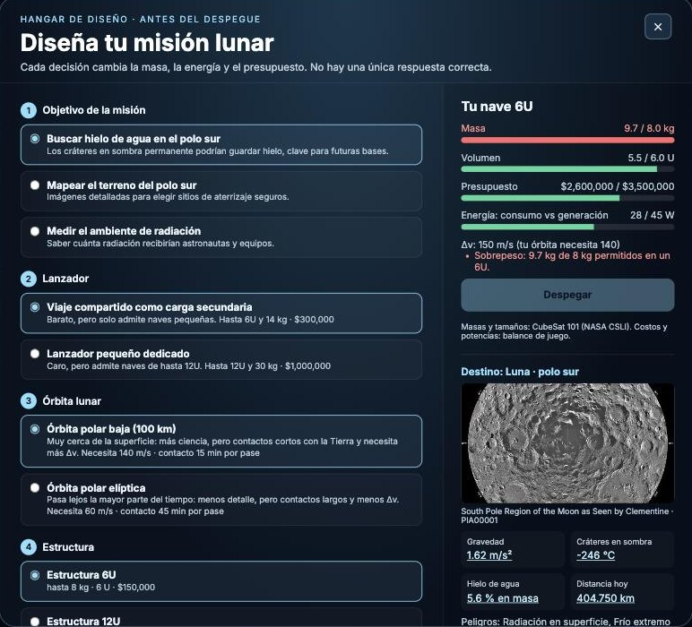
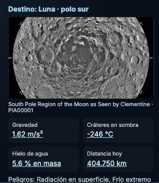
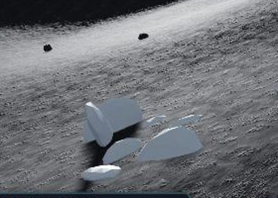
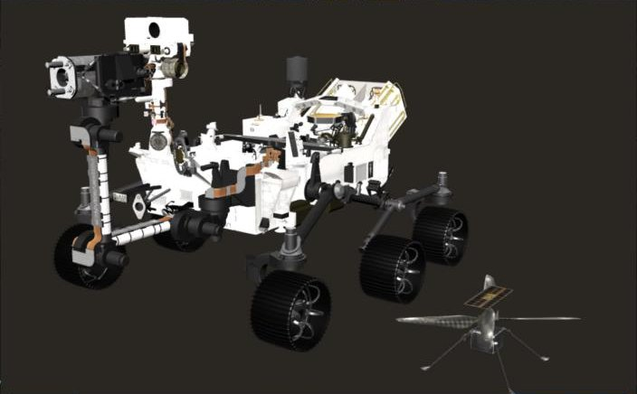

NASA Space Apps Challenge 2026 · Space Mission Design Game · Tegucigalpa
Odyssey: Lunar Mission Designer
Team Rocket HN. Design a small spacecraft for a real lunar mission, balance budget, mass, energy and Δv, fly it to the Moon's south pole and live with the consequences of every engineering choice.
Play it in the browser, no login: blue201.github.io/NASA_PROYEC
Moon firstReal NASA data with sourcesDecisions with visible consequences
The mission
Prove that lunar water ice can be extracted
In our near-future story, the demand of computing has strained Earth's resources. Your team must reach Shackleton crater, at the lunar south pole, where permanently shadowed regions hold water ice (LCROSS measured 5.6 ± 2.9 % by mass in Cabeus).
The game teaches by doing: you make the trade-offs, the game shows the consequences and explains why.
Design phase · the hangar
Every choice costs budget, mass or energy
- Objective, launch vehicle, lunar orbit and 4 subsystems: power, communications, instrument, propulsion.
- Size and mass limits from NASA CubeSat 101 (6U and 12U).
- Invalid designs cannot launch, and the game says why: overweight, over budget, not enough Δv for the orbit, or a power deficit.
- No single right answer: a low polar orbit gives more science but needs more Δv and shorter contact with Earth.

Flight · resources in real time
Your design becomes your cockpit
- Starting fuel comes from your Δv margin; battery charge follows the power you generate versus what you consume.
- Cockpit screens show energy, fuel, Δv, mass and remaining budget while you fly.
- Earth–Moon distance and signal delay come from the JPL Horizons API (≈405,000 km, 1.35 s).
- The destination card uses real values with sources: gravity, polar crater temperature, ice abundance.


Surface · only real things
Real places, real resources, cited
- We removed every invented monument, crystal and cave. What remains is real: Marius Hills lava tube pit, Apollo and Surveyor sites, water-ice and ilmenite deposits placed from our data files.
- Approaching a deposit shows its name and source.
- On Mars: hematite spherules (Opportunity), seasonal CO₂ jets (MRO/HiRISE), perchlorates (Phoenix), and Perseverance and Ingenuity 3D models from NASA 3D Resources (logos covered).
- Other planets stay locked until the lunar mission is complete.


Data we use
NASA data, validated and cited
- JPL Horizons API: Earth–Moon distance and light time.
- NASA Image and Video Library: lunar south pole and CubeSat imagery, each with its
nasa_id. - NASA NSSDC fact sheets and NASA Science: gravity, radius, temperatures, atmospheres.
- Mission results: LCROSS, LRO, SELENE/Kaguya, Chang'e 4 LND, Phoenix, MRO/HiRISE, Mars Odyssey/THEMIS, Opportunity, MESSENGER.
- CubeSat 101 for spacecraft size and mass; NASA 3D Resources for Perseverance and Ingenuity.
Every value lives in data/planets/<body>.json with its source_url and a verified flag. Unverified values are marked as pending.
Credits and SI
How we built it
- Team Rocket HN, Tegucigalpa. Base engine: Odyssey, our team's own game, extended during the hackathon with the design hangar, cockpit, real data and planet cleanup.
- SI (Super Intelligence): we used SI assistants (Claude by Anthropic, among others) to write and review code and texts. Every change was reviewed by the team; rules in
AGENTS.md, history indocs/BITACORA.md. - Open resources: three.js (MIT), Solar System Scope textures (CC BY 4.0), ESO Milky Way (CC BY 4.0), Piper voices. Full list in
game/assets/CREDITS.md. - Not endorsed by NASA. No NASA logos or branding.
Play: blue201.github.io/NASA_PROYEC · Code: github.com/blue201/NASA_PROYEC